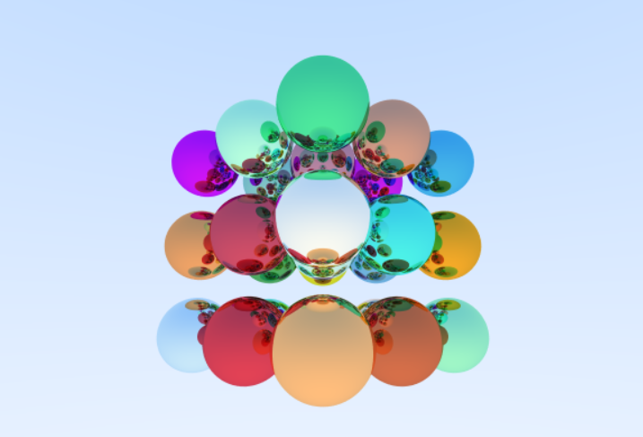
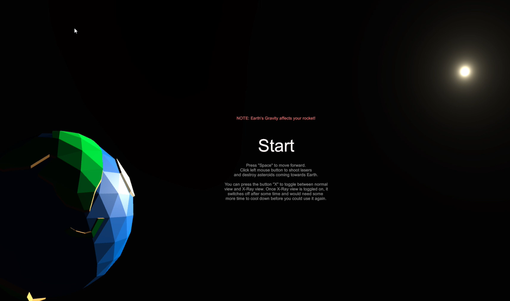
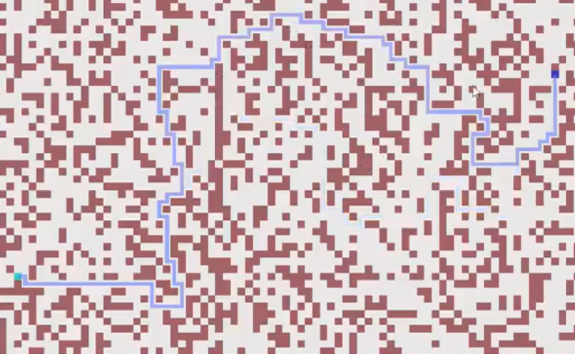
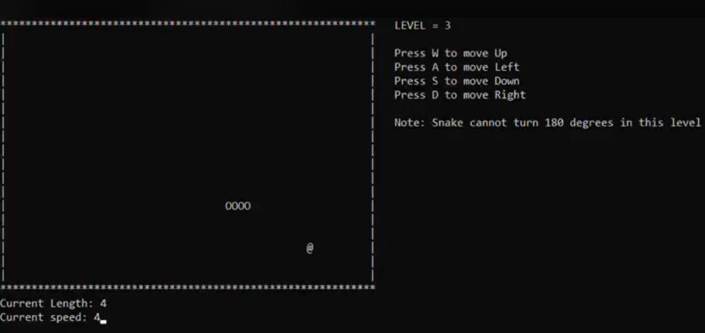
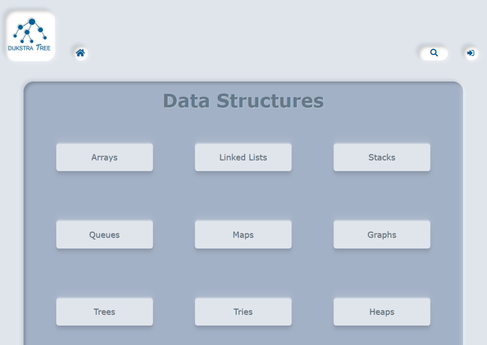

Hello! My Name is Sayan Bakshi.
I
Welcome to my Portfolio
꧁ Projects ꧂

Ray Tracer made with C++ and SDL2 which uses path tracing technique to render frames.

The
classic asteroids game redesigned in
3D. Created during my first hackathon, Hack-cade, 2021 in 48 hours.

A
web based simulation made with GodotEngine where you can find the shortest path in an unweighted path.

The
retro snake game in ascii playable on the windows console made with C++.
Procedurally generated moon and planet made with unity and C#.

Me and my
classmates are currently working on this website aimed for teaching DSA with visualization and interactive contents to make problem solving more intuitive.
About Me
I am currently pursuing B.E in Computer Science and Engineering from UIET, Panjab University. I am of batch 2020-24. I started with developing games that helped me explore areas such as procedural generation, rasterization, shaders, ray tracing as well as gave me insights into artificial intelligence, compute shaders, and simulations.
My journey in coding started with Google's grasshopper app which taught me the basics of javascript. From there on, I learned C/C++, gdScript while working on Godot, C# with Unity and currently learning Html, CSS, and JavaScript for Web Development.
I am in absolute love with competitive programming. The adrenaline rush that I get while racing against time to beat my personal best and solving the rank deciding question at the last moment is what I crave for daily. Being stuck at a question for several days and then finally solving it makes each second worth it.
Competitive programming and development both, got the curious little kid inside me awake again, experimenting with things knowing no bounds.